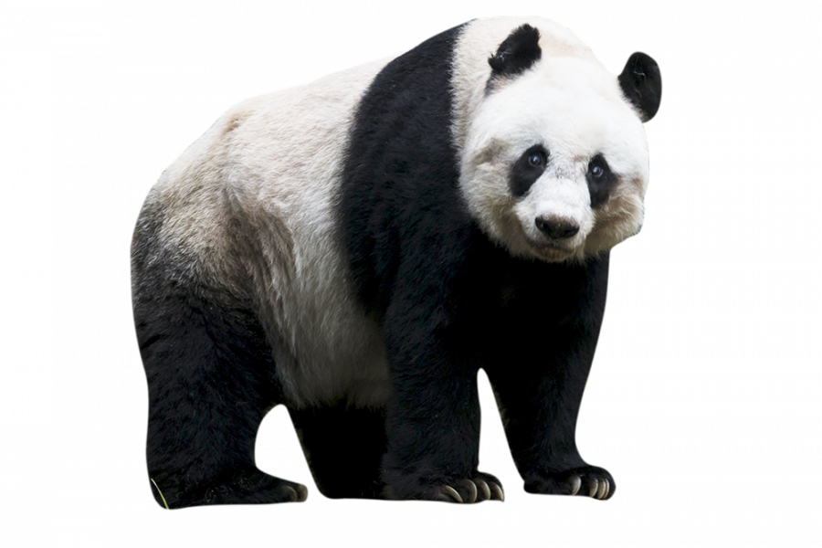

Большие панды (ailuropoda melanoleuca) - вид всеядных млекопитающих из семейства медвежьих,обитающих в горных районах центрального Китая: в провинции Сычуань и Тибете.
Эти животные достигают веса 120 кг и длины до 1,8 м. От других медведей больших панд отличает относительно длинный хвост - до 1/10 от общей длины тела (до 10-15 см). Их тело покрыто густым белым мехом с черными пятнами вокруг глаз, черным также окрашены лапы и уши.
 Подробнее